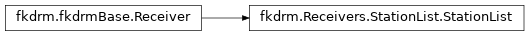

Receivers¶
All receivers are sub-classes of fkdrm.fkdrmBase.Receiver which defines
an abstract interface for all receivers.
SimpleStation¶
-
class
fkdrm.Receivers.SimpleStation.SimpleStation(x, filter_results=False, filter_parameters={}, name='')[source]¶ Bases:
fkdrm.fkdrmBase.ReceiverThis simple receiver stores response in memory.
Internally, numpy arrays are used for storage. Optional parameters allow filtering of the response before outputting, althoiugh it is always stored raw (unfiltered), therefore the user can experiment with different filtering settings.
Results can be saved through the
save()method and loaded with theload()function. for posterior use.Parameters: - x (numpy array (3,)) – xyz location of the station.
- filter_results (bool) – (optional) whether a filter should be applied to station response
- filter_parameters (dict) – (optional) filter parameter settings (see below)
- name (str) – (optional) station name, used for plotting and other actions.
Filtering is performed using the
scipy.signalmodule. A Butterworth filter (scipy.signal.butter) is designed and applied using the acausal two-way filter (scipy.signal.filtfilt) with constant padding using the edge values of the response as padding values.Filter parameter settings:
filter_parameters['fmax']=10: (double) Cut-off frequency for the low-pass filter in Hz.filter_parameters['btype']='low: (str) Filter typefilter_parameters['order']=3: (int) Order of the filter.
Example:
#Create a station at (10,10,0), setting filtering # to an order 3 filter with a 3Hz cutoff. station = SimpleStation([10,10,0], filter_results=True, filter_parameters={'fmax':5., 'order':3})
-
get_nreceivers()¶ Get the number of receivers of this class (for receiver containers)
-
get_pos()[source]¶ Return the position of the receiver station.
Returns: Position vector of the station. Retval: numpy array shape=(3,) Example:
x = station.get_pos()
-
get_response(do_filter=True)[source]¶ Return the recorded response of the station.
Parameters: do_filter (bool) – Will/won’t filter if filter parameters have been set. (Most useful to disable filtering before return) Returns: Z (down), E (east), N (north), t (time) response of the station. Retval: tuple containing numpt arrays with z, e, n, t reponse (shape (Nt,)) Example:
z,e,n,t = station.get_response()
-
get_response_derivative(ntimes=1, do_filter=True)[source]¶ Return the time-derivative of the recorded response of the station.
Parameters: - ntimes (int) – How many times to differentiate in time.
- do_filter – Will/won’t filter if filter parameters have been set. (Most useful to disable filtering before return)
- do_filter – bool
Returns: Z (down), E (east), N (north), t (time) response of the station differentiated
ntimesin timeRetval: tuple containing numpt arrays with z, e, n, t reponse (shape (Nt,))
Example:
z,e,n,t = station.get_response_derivative()
-
get_response_integral(ntimes=1, do_filter=True)[source]¶ Return the time-integral of the recorded response of the station.
Parameters: - ntimes (int) – How many times to time-integrate.
- do_filter – Will/won’t filter if filter parameters have been set. (Most useful to disable filtering before return)
- do_filter – bool
Returns: Z (down), E (east), N (north), t (time) response of the station integrated
ntimesin timeRetval: tuple containing numpt arrays with z, e, n, t reponse (shape (Nt,))
Example:
z,e,n,t = station.get_response_integral()
-
static
load(fname)[source]¶ Load station from file
Parameters: fname (str) – File name to save to. Returns: Loaded station. Return type: SimpleStationExample:
station = SimpleStation.load("station.pickle")
-
save(fname)[source]¶ Save the current station and all its data into a binary file (uses cPickle).
Parameters: fname (str) – File name to save to. Example:
station.save("station.pickle")
-
set_dt(dt)¶ Set the time-step of the receiver
Inheritance diagram:
.
StationList¶
-
class
fkdrm.Receivers.StationList.StationList(stations)[source]¶ Bases:
fkdrm.fkdrmBase.ReceiverThis is a list of SimpleStations.
If you wan’t to have more than one point in space where you need to record motions, use this class.
Parameters: stations ( listcontainingSimpleStation) – A list of SimpleStationsExample:
sta1 = SimpleStation([20,20,0]) sta2 = SimpleStation([20,40,0]) stations = StationList([sta1, sta2])
-
__iter__()[source]¶ Iterate the list of stations:
Example:
#Obtain a StaitionList iterator station_iterator = iter(stations)
Example:
#Iterate over all stations using a for loop for sta in stations: print sta
-
next()[source]¶ Get the next element in the station list.
Example:
#Iterate over all stations iter = iter(stations) next_station = next(iter)
-
set_dt(dt)¶ Set the time-step of the receiver
-
Inheritance diagram:

.
TxtStation¶
-
class
fkdrm.Receivers.TxtStation.TxtStation(filename, x, filter_results=False, filter_parameters={}, name='')[source]¶ Bases:
fkdrm.Receivers.SimpleStation.SimpleStationThis specialization of SimpleStation can write responses into a text file/
Parameters: - x (numpy array (3,)) – xyz location of the station.
- filter_results (bool) – (optional) See
fkdrm.Receivers.SimpleStation - filter_parameters (dict) – (optional) See
fkdrm.Receivers.SimpleStation - name (str) – (optional) station name
-
add_to_response(z, e, n, t)¶ Superimpose a new response to current response.
-
get_nreceivers()¶ Get the number of receivers of this class (for receiver containers)
-
get_pos()¶ Return the position of the receiver station.
Returns: Position vector of the station. Retval: numpy array shape=(3,) Example:
x = station.get_pos()
-
get_response(do_filter=True)¶ Return the recorded response of the station.
Parameters: do_filter (bool) – Will/won’t filter if filter parameters have been set. (Most useful to disable filtering before return) Returns: Z (down), E (east), N (north), t (time) response of the station. Retval: tuple containing numpt arrays with z, e, n, t reponse (shape (Nt,)) Example:
z,e,n,t = station.get_response()
-
get_response_derivative(ntimes=1, do_filter=True)¶ Return the time-derivative of the recorded response of the station.
Parameters: - ntimes (int) – How many times to differentiate in time.
- do_filter – Will/won’t filter if filter parameters have been set. (Most useful to disable filtering before return)
- do_filter – bool
Returns: Z (down), E (east), N (north), t (time) response of the station differentiated
ntimesin timeRetval: tuple containing numpt arrays with z, e, n, t reponse (shape (Nt,))
Example:
z,e,n,t = station.get_response_derivative()
-
get_response_integral(ntimes=1, do_filter=True)¶ Return the time-integral of the recorded response of the station.
Parameters: - ntimes (int) – How many times to time-integrate.
- do_filter – Will/won’t filter if filter parameters have been set. (Most useful to disable filtering before return)
- do_filter – bool
Returns: Z (down), E (east), N (north), t (time) response of the station integrated
ntimesin timeRetval: tuple containing numpt arrays with z, e, n, t reponse (shape (Nt,))
Example:
z,e,n,t = station.get_response_integral()
-
static
load(fname)¶ Load station from file
Parameters: fname (str) – File name to save to. Returns: Loaded station. Return type: SimpleStationExample:
station = SimpleStation.load("station.pickle")
-
next()¶ Implement the iterator protocol (also needs to implement
__iter__())
-
save(fname)¶ Save the current station and all its data into a binary file (uses cPickle).
Parameters: fname (str) – File name to save to. Example:
station.save("station.pickle")
-
set_dt(dt)¶ Set the time-step of the receiver
Inheritance diagram:
.
DRMBox¶
-
class
fkdrm.Receivers.DRMBox.DRMBox(pos, Nelem, h, azimuth=0.0, crust=0, filter_results=False, filter_parameters={}, name='', x_qa=[])[source]¶ Bases:
fkdrm.Receivers.StationList.StationListA class to generate receiver layout useful in DRM.
Parameters: - pos ((numpy array (3,))) – Center point of the DRM box in xyz coordinates.
- Nelem ((int)) – Number of elements (stations) in each direction.
Nelem = [Nx, Ny, Nz] - h ((double)) – Spacings in each direction
h = [hx, hy, hz] - azimuth ((double)) – Azimuthal orientation of the box.
- crust ((
fkdrm.CrustModel)) – Crust properties. - filter_results ((bool)) – (See
fkdrm.Receivers.SimpleStation) - filter_parameters ((dict)) – (See
fkdrm.Receivers.SimpleStation) - name ((str)) –
- x_qa (list of numpy array (3,)) – List of points where QA data is requested.
Note
Side lengths of the DRM box are
[Nx*hx, Ny*hy, Nz*hz]up to the interior boundary of the box. Exterior boundary has side lengths:[(Nx+2)*hx, (Ny+2)*hy, (Nz+1)*hz]-
add_to_response(z, e, n, t)¶ Superimpose a new response to current response.
-
get_nreceivers()¶ Get the number of receivers of this class (for receiver containers)
-
set_dt(dt)¶ Set the time-step of the receiver
{kind=link}
Inheritance diagram:
.